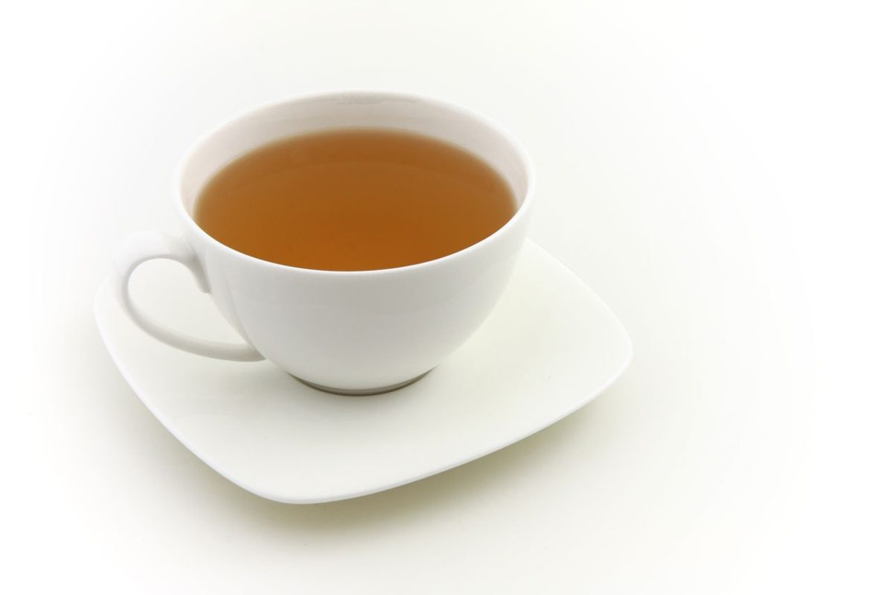

制作側の連想
上から下へ落ちる、六つの部位
このサイトは、上から入れて下へ落とす「重力式のビンディスペンサー」を図にしたつもりで作りました。六つの部位に番号をふり、上の図と並べています。制作側の連想で、お店の理念・由来とは無関係です。実際の製品の仕様を示すものでもありません。
凡例
六つの部位
- 1ふた上の口をふさぐ部分。ほこりを防ぎ、中身を足すときに外します。
- 2ホッパー中身をためておく、縦長の透明な筒。重みで下へ送り出します。
- 3調整ダイヤル出口の開き具合を決める回転つまみ。目盛りに合わせて回します。
- 4開閉レバー押し下げると出口が開き、離すと閉じるレバー。
- 5吐出口(シュート)中身が落ちてくる細い出口。下の受け皿へ向いています。
- 6受け皿落ちてきたものやこぼれを受け止める台。
ギャラリー(イメージ)
パンとコーヒー豆の写真


写真はイメージです。お店のものではなく、お店で提供している商品を示すものでもありません。
ギャラリー(イメージ)
果物と野菜の写真



写真は果物・野菜・飲み物のイメージです。お店のものではありません。